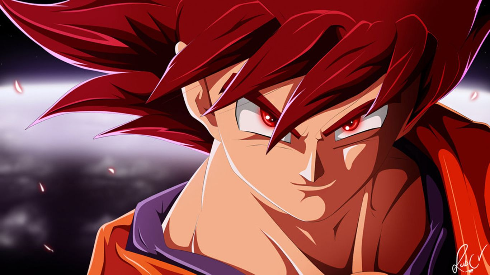
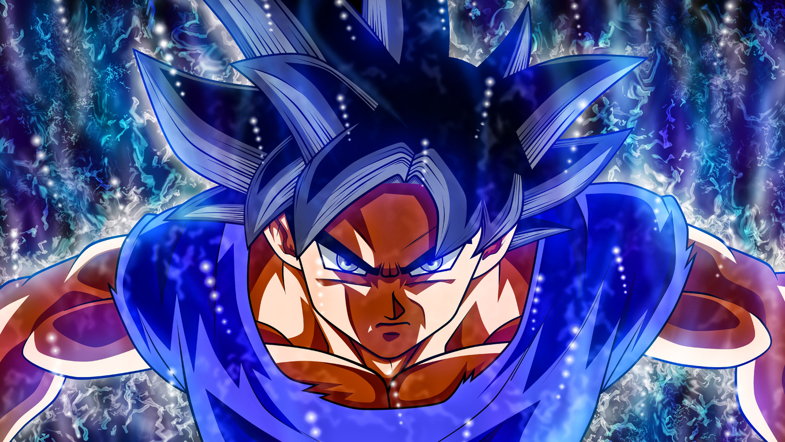
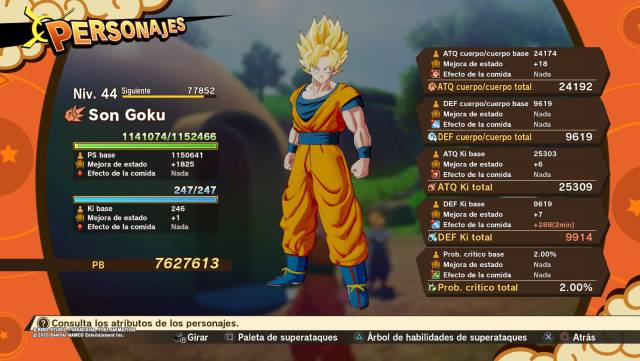

Con tus donaciones podemos crear mas contenido
Donar →| Anime |



Este articulo se publico originalmente el 3 de agosto de 2023
Indices
Gokú es el protagonista principal y central de la franquicia de anime "Dragón Ball", creada por la mente del mangaka y diseñador japonés Akira Toriyama. Desde su primera aparición en el primer manga de Dragón Ball, el cual se estrenó en 1984 en la revista Shōnen Jump, Gokú se convirtió en uno de los personajes más icónicos, si no el más icónico, de esta franquicia en la cultura pop a nivel internacional. Ha sido conocido y popularizado entre las generaciones que crecieron viéndolo en innumerables capítulos tanto del manga como de la serie televisiva que fue creada posteriormente.
Originalmente conocido como Kakaroto, Gokú es un ser de origen extraterrestre proveniente del planeta Vegeta que llega a la Tierra el 26 de febrero de 1986 en una cápsula espacial, siendo enviado por su raza a este planeta con el objetivo de conquistarlo cuando creciera.
En su llegada, fue encontrado por Son Gohan, un anciano muy simpático, el cual lo acogió y adoptó, educándolo y tratándolo como un miembro de su familia y de la raza humana. A medida que crecía, Gokú se comportaba de una manera muy violenta. Sin embargo, un día, mientras su abuelo Gohan lo acompañaba en un paseo por el bosque, Gokú tuvo un accidente que cambió el rumbo de la trama, convirtiéndolo en el héroe planetario que todos conocemos en lugar del conquistador que su raza esperaba que fuera. Gokú abrazó la justicia y la paz sin dejar de lado su pasión por las artes marciales, convirtiéndose en un maestro de las mismas.
Desde ese trasfondo, Gokú se embarca en aventuras que abarcan los confines del universo, más allá del espacio y el tiempo, explorando nuevos mundos y enfrentando desafíos increíbles. En su viaje, no solo está marcado por la lucha contra enemigos poderosos, sino también por la formación de lazos profundos con amigos y aliados que comparten su compromiso con la justicia y la protección del multiverso.
Creación y concepto
El maestro japonés del manga y artista, Akira Toriyama, creó a Gokú para su serie de manga "Dragon Ball", una obra que pronto se convertiría en un éxito no solo a nivel nacional sino también internacional, atrayendo fans de todo el mundo y convirtiéndose en una exitosa franquicia respaldada por una variedad de empresas.
La primera versión del manga de "Dragon Ball" se publicó por primera vez en la revista Weekly Shonen Jump en 1984 y continuó hasta 1995. Durante este período, se desarrolló la trama y los personajes de la serie, incluyendo a Gokú como el protagonista. Originalmente, la idea para Gokú era que fuera un anciano, pero Akira Toriyama finalmente llegó a la brillante conclusión de que debería ser un niño para darle un giro más interesante a la trama.
Diseño: Gokú fue diseñado como un personaje que comenzaría desde la infancia y evolucionaría con el tiempo. Originalmente, tenía pelo puntiagudo y una cola de mono, que luego desapareció debido al desarrollo de la trama. Físicamente, se destacaba por su cuerpo bien definido, ojos grandes de forma casi rectangular, una sonrisa amigable y un tono de piel pálida anaranjada. Además, llevaba atuendos coloridos y llamativos, con colores vivos como el naranja y el azul
Personalidad: Gokú tiene características éticas, morales y emocionales que lo hacen único. Su amigable e ingenua forma de comportarse, así como su pasión apasionada por sus intereses, como las artes marciales, lo hacen especialmente atractivo para los espectadores
Evolución del Personaje: La evolución de Gokú a lo largo de la trama es única, ya que cada nueva fase de la serie trae consigo un crecimiento físico, mental y psicológico del protagonista. Esto fue hecho por Akira Toriyama con la intención de que las generaciones que comenzaran a ver la serie o leer el manga pudieran crecer junto a Gokú en sus épicas batallas, haciendo que la edad del personaje no fuera tan distante de la del lector o fan.
Valores y Moral: Gokú personifica valores como la amistad, la lealtad, la disciplina y la alegría. Su búsqueda constante de ser el más fuerte y el mejor lo hace destacar y lo diferencia de otros personajes del manga, como Vegeta, Piccolo o el encantador Goten
Etimología
El nombre de "Gokú" es de origen japonés y proviene del kanji, un carácter utilizado en el sistema de escritura japonés que se utiliza para escribir el nombre. Los nombres de los personajes de esta franquicia suelen tener significados o asociaciones específicas basadas en los kanji utilizados.
La palabra "Gokú" (悟空) se compone de dos kanji o caracteres.
El primero es "悟" (go): este carácter japonés significa "el entender" o "darse cuenta". Se asocia a Gokú ya que Gokú es un personaje con una capacidad única para entender una pelea, así como para aprender nuevas habilidades para el combate con relativa facilidad.
El segundo es "空" (ku): este otro significa "cielo" o "vacío". Esto está asociado a que Gokú, como se sabe, vino del cielo o espacio exterior. Por lo tanto, se puede interpretar la conexión que tiene Gokú con su planeta, su raza y aquellos que lo acogieron.
Si se combinan los dos kanji o caracteres japoneses, el nombre Gokú aproximadamente podría interpretarse como "el que entiende el cielo" o "el que entiende el cielo o vacío", un nombre muy original inspirado en las estrellas y lo más cósmico y solemne de la mente del maestro Akira Toriyama.
Técnicas y habilidades
Kamehameha: Una técnica poderosa que consiste en concentrar y generar una gran cantidad de ki en las palmas de las manos, para luego expulsarla en la dirección deseada con un movimiento brusco. El maestro que enseñó a Goku esta técnica fue el Maestro Roshi.
Kaio-Ken: El Kaio-Ken es una técnica bastante peligrosa que permite multiplicar temporalmente la fuerza, velocidad y agilidad del portador. El Kaio-Ken se puede aumentar en varios niveles, pero su uso incorrecto puede deteriorar la salud e incluso causar la muerte de quien lo utilice. Goku aprendió esta técnica del Kaio-shin del Este.
Genkidama: Es una técnica que permite a Goku recolectar la energía de seres vivos y la naturaleza para formar una esfera de energía gigante. La Genkidama es extremadamente poderosa y se utiliza generalmente como último recurso contra enemigos muy fuertes y casi invencibles.
Super Saiyajin: El Super Saiyajin es una habilidad que posee Goku, que le permite transformarse y aumentar su poder en un 125%, mejorando sus capacidades físicas como velocidad, fuerza, resistencia y estamina. Además, puede potenciarlas aún más si experimenta emociones negativas como el enojo. A lo largo de la serie, Goku alcanza varias formas de Super Saiyajin, incluyendo el Super Saiyajin 2, 3 y 4.
Teletransportación: Es una técnica útil en combate que consiste en transponer temporalmente la materia, en este caso, el cuerpo del que usa esta técnica, a cualquier lugar, enfocando el ki. Goku utiliza la teletransportación en casi toda la saga, lo que le permite luchar mano a mano con enemigos más poderosos y ganar ventaja en la batalla.
Dragón Fist: Es una técnica que consiste en rodear el puño de energía, siendo posible con un enfoque de ki proyectado para moldear la forma de un dragón antes de lanzarse hacia su oponente. Es una técnica poderosa utilizada en momentos críticos.
Ultra Instinto: Esta es una forma avanzada de combate que le permite a Goku reaccionar y moverse automáticamente sin pensar, solo por instinto natural. Esto le otorga a Goku una gran ventaja en combate y cabe recalcar que es una de las técnicas más poderosas que ha alcanzado en la serie.
Solar Flare : Es una técnica que consiste en emitir luz extremadamente brillante y deslumbrante con el objetivo de cegar a los oponentes. Goku ha usado esta técnica en varias ocasiones durante la saga para cegar temporalmente a sus oponentes y ganar ventaja en la batalla.
Fusión: La fusión es una técnica que permite combinar a dos o más individuos en uno solo, no solo fusionando sus poderes, sino también sus personalidades, lo que crea un guerrero con habilidades únicas y sobresalientes en la batalla. Goku ha usado esta técnica contra muchos guerreros como Broly o el terrible Zamas, pero es temporal y si algo sale mal, los individuos pueden quedar fusionados para siempre.